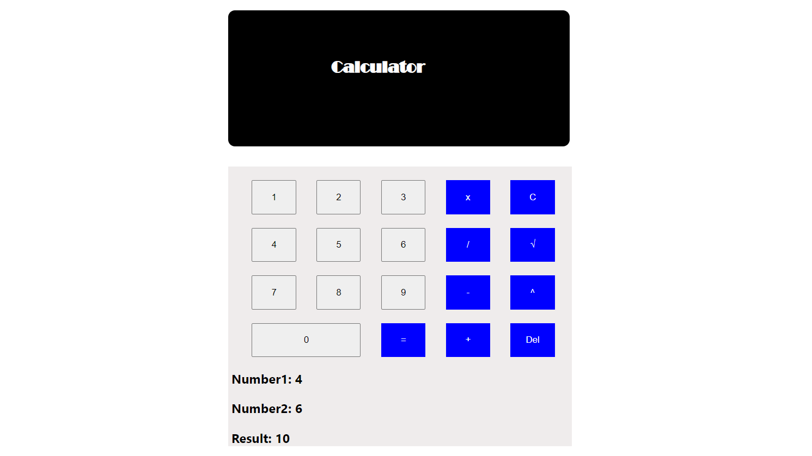

Project Description
The "Blinker" robot leverages advanced sensing technologies to assist visually impaired users in navigating the
university campus. It effectively detects and avoids obstacles such as stairs, walls, and other potential hazards,
ensuring a safer and more accessible environment.
As a team, we:
Created the complete robot design from scratch using SolidWorks, focusing on functionality and user-centric
design principles.
Developed the kinematic model to ensure optimized and smooth movement for efficient navigation.
Fabricated the robot's components using cutting-edge techniques such as laser cutting and 3D printing to achieve
precision and durability.
Designed and built the driving circuit to power and control the robot's movements.
Programmed the robot using LabVIEW to enable seamless integration between hardware and software, ensuring accurate
obstacle detection and path planning.
Worked closely with a multidisciplinary team of students, demonstrating strong teamwork and effective communication to
bring the project from concept to completion.
This hands-on project enhanced our ability to apply engineering principles to solve real-world challenges and boosted our commitment to leveraging
technology for social good.
Project Image

Blinker: Robotic assistant designed to support visually impaired individuals